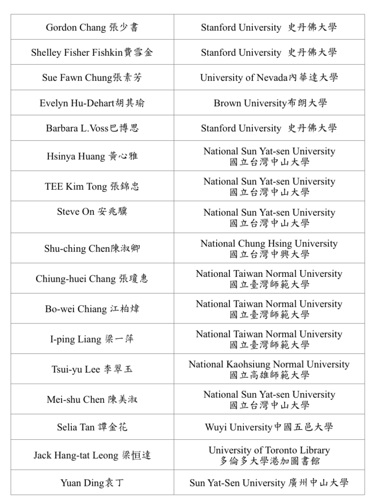
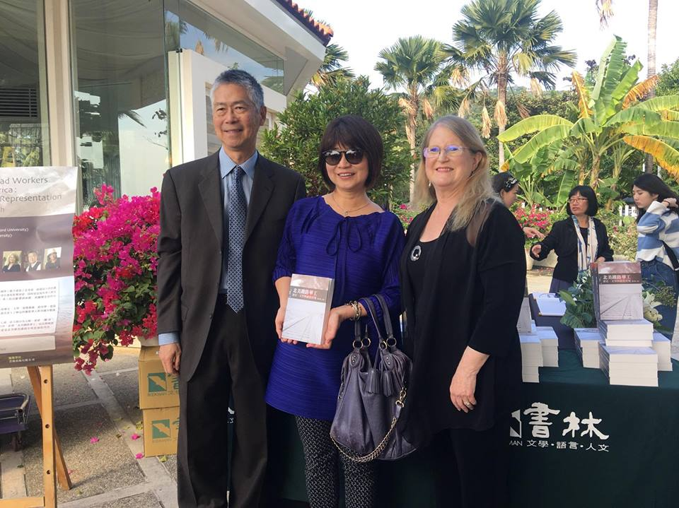
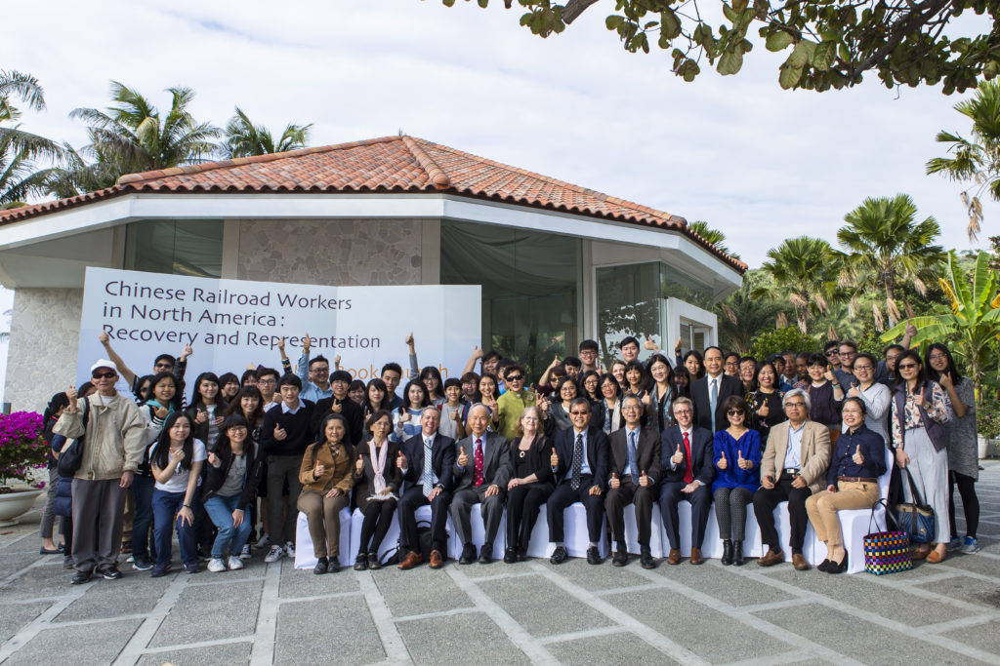

A Chinese-language book, 北美鐵路華工：歷史、文學與視覺再現 [Chinese Railroad Workers in North America: Recovery and Representation], edited by Hsinya Huang [黃心雅] (Taipei: Bookman [台北：書林出版社], 2017). The book, which features a preface by Gordon H. Chang and Shelley Fisher Fishkin, who co-directed the Chinese Railroad Workers in North America Project, was produced by scholars from Asia and North America who collaborated through the project over the preceding three years.

Professors Chang and Fishkin were featured speakers (along with Professor Selia Tan of Wuyi University, China) at a book launch at National Sun Yat-sen University in Kaohsiung, Taiwan on December 14, as well as at a book launch at National Taiwan Normal University in Taipei on December 15.

The December 14 event, which was organized by Professor Hsinya Huang (National Sun Yat-sen University), was opened by Professor Ying-Yao Cheng, President of National Sun Yat-sen University. The event included a roundtable featuring many of the seventeen contributors to the volume. Other speakers included Matthew O’Connor (Kaohsiung Branch Chief, AIT), Professors Pin-chia Feng (National Chiao Tung University), Chen-ching Li (Shi Hsin University), Shuli Chang (National Cheng Kung University), and Yu-cheng Lee (Academia Sinica). The book launch in Taipei, at which Chang, Fishkin, and Tan were featured speakers, was coordinated by Professor Bo-Wei Chiang, chair of the Department of East Asian Studies of National Taiwan Normal University, and Professor En-Mei Wang of NTNU, and was moderated by Professor Iping Liang of NTNU, a contributor to the volume.
北美鐵路華工：歷史、文學與視覺再現 [Chinese Railroad Workers in North America: Recovery and Representation] was supported by a grant from the Chiang Ching-Kuo Foundation. Dr. Pauline Yu, CCK Foundation board member (and President of the American Council of Learned Societies) attended the book launch in Taipei.
The book’s seventeen chapters—arranged in sections devoted to recovery, home, memory, labor, and representation—span disparate geographies, histories, and disciplines; texts and contexts; and archival research and field work in locals ranging from the sending villages in China to the Sierra Nevada Mountains. Together they addressed the lack of attention that Chinese railroad workers in North America had received. The contributors, who come from history, literature, archaeology, architecture, political science, American Studies and East Asian Studies, are:

This interdisciplinary volume is of interest to scholars in the humanities, diaspora studies, American history and culture, ethnic studies, minority labor studies, and transnational studies.
一八六五至一八六九年間，約10,000至15,000名中國移工艱苦建造了北美第一條橫貫大陸的鐵路。華工的勞動對美國國家發展、國土擴張和早期全球化進程影響深遠，同時更是海外華人歷史與文化重要的一頁。然而，綜觀華美／美國歷史，華工的貢獻遭到抹殺，相關歷史資料付之闕如，國內外這方面的研究也有限。
本書是第一本熔歷史、文學、視覺藝術、政治學、建築史、考古學與文化研究於一爐的華文專書，頗有助於讀者深入了解這段離散華人與美國少數族裔的歷史及文化記憶。
全書收入論文十七篇，依主題分為五輯：重建、(離)家、記憶、勞動以及再現。透過跨國界、跨語言、跨領域的合作，針對「北美鐵路華工」這長期被忽視的歷史篇章提出新觀點與論述脈絡，彰顯了華人在建造北美橫貫鐵路中所扮演的角色。
Additional images from these events:

Prof. Gordon H. Chang (Stanford), Prof. Hsinya Huang (National Sun Yat-sen University), and Prof. Shelley Fisher Fishkin (Stanford) at book launch in Kaohsiung, Taiwan.

Attendees at book launch of Chinese Railroad Workers in North America: Recovery and Representation at National Sun Yat-sen University, Kaohsiung, Taiwan, December 14, 2017
Link to news articles about the book:
http://news.nsysu.edu.tw/files/14-1342-178330,r2910-1.php?Lang=zh-tw
http://news.nsysu.edu.tw/files/13-1342-179152-1.php?Lang=zh-tw
Link to publisher’s website:
http://www.bookman.com.tw/BookDetail.aspx?bokId=10015889
The book is available from online bookstores in Taiwan, Hong Kong and China:
http://www.books.com.tw/products/0010772957 (Taiwan)
http://www.sanmin.com.tw/Product/Index/006592832 (Taiwan)
http://www.superbuy.my/shop/chinese-book/p/378824 (China)
http://www.megbook.com.hk/mall/detail3.jsp?proID=3098105#.WmDMkq7Xapo (Hong Kong)